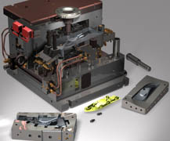

|
 Türkiye
temsilciliði yaptýðýmýz Progressive die Wizard sac kalýpçýlýðý
ve Mold Wizard plastik enjeksiyon kalýpçýlýðý kendi alanýnda
en önde gelen ürünlerdir. Plastik kalýpçýlýðýna yönelik olan
Moldwizard, Unigraphics NX'in standart özelliklerine ek olarak
geliþtirilmiþ ve kalýp tasarým sürecini inanýlmaz boyutlarda
hýzlandýran bir üründür. Türkiye'de piyasaya çýktýðý ilk günden
bu yana çok büyük ilgi gören Moldwizard þu anda 100'e yakýn
plastik kalýpçýsýnda kullanýlmaktadýr. Türkiye
temsilciliði yaptýðýmýz Progressive die Wizard sac kalýpçýlýðý
ve Mold Wizard plastik enjeksiyon kalýpçýlýðý kendi alanýnda
en önde gelen ürünlerdir. Plastik kalýpçýlýðýna yönelik olan
Moldwizard, Unigraphics NX'in standart özelliklerine ek olarak
geliþtirilmiþ ve kalýp tasarým sürecini inanýlmaz boyutlarda
hýzlandýran bir üründür. Türkiye'de piyasaya çýktýðý ilk günden
bu yana çok büyük ilgi gören Moldwizard þu anda 100'e yakýn
plastik kalýpçýsýnda kullanýlmaktadýr.
Boðaziçi
Yazýlým olarak müþterilerimizden bize gelen olumlu tepkiler,
Moldwizard'ýn kalýp tasarýmý için harcanan zamanlarý %90 hatta
bazen daha da büyük oranda azalttýðý yönünde. Programýn sýrrý
ise bilindik yöntemlerle çok zaman alan diþi-erkek çekirdek
ayrýmlarý, çok gözlü kalýp tasarýmlarý, kalýp elemanlarýnýn
tek tek oluþturulmasý gibi iþlemleri kendi içerisinde çok
büyük oranda otomatik olarak yapmasýndan kaynaklanýyor. Otomatik
çekme payý verme, bütün standart veya standart dýþý kalýp
setleri, hazýr standart maça mekanizmalarý, iticiler, yolluklar,
soðutma kanallarý, bakýr elektrod, lokmalar ve standart parçalarýn
otomatik yerleþtirilmesi programýn diðer özellikleri. Tasarýmýn
büyük kýsmýný program kendisi halletiði için kullanýcýya sadece
bu iþleyiþi yönlendirmek ve gerekli sayýsal deðerleri girmek
kalýyor. Program iþlemleri otomatik olarak hallederken ayný
zamanda kullanýcýya da tasarýmýn herhangi bir aþamasýnda müdahele
þansý vererek kullanýcýnýn kendi kafasýndaki tasarýmý ekrana
aynen yansýtabilmesine olanak tanýyor. Çalýþmanýn baþýnda
elinde sadece kalýplanacak parçanýn 3 boyutlu modeli olan
kullanýcý, çalýþma bittiðinde kalýp elemanlarýnýn her birini
3 boyutlu katý model olarak otomatikman elde etmiþ oluyor
ve isterse bunlar üzerinden teknik resimlerini de anýnda çýkartabiliyor.
Yapýlan bütün bu iþlemlerin parametrik yani "sonradan
deðiþtirilebilir" olmasý da ayrý bir avantaj saðlýyor.
Progressive
Die Wizard da ayný Moldwizard gibi otomatikleþtirilmiþ araçlar
içeren, genelde ayný mantýk üzerinde çalýþan fakat branþ olarak
transfer sac kalýpçýlýðýna yönelik bir ürünümüz. Bu ürün de
transfer sac kalýbý dizayný için gerekli bütün fonksiyonlarý
içeriyor. Ürünün sac metal dizayný için çok önemli olan farklý
bir özellði ise Unigraphics NX dýþýnda herhangi bir programda
modellenmiþ katý datalarýný da sac metal parçasý olarak algýlayýp
bunun üzerinden kalýp tasarýmýný yapabilmesi. Moldwizard'a
göre daha geç piyasaya çýkan bu ürün de önümüzdeki yýllarda
aynen Moldwizard gibi kendi pazarýnda lider olacak bir üründür.
Geçtiðimiz üç yýlda kalýpçýlýk sektörü çok fazla geliþti.
Fiyat olarak halen Uzakdoðu kökenli kalýpçýlarla rekabette
zorlanmaktayýz. Ancak kalite, üretim zamaný ve nakliye süresi
gözönüne alýndýðýnda halen rekabetçi olabilmekteyiz. Kalýpçýlarýmýzýn
otomasyonu arttýrarak ve kalýplarda standatizasyona giderek
rekabet gücünü daha da arttýrmasýyla bu sorunu da çözeceðimiz
kanýsýndayýz.
Unigraphics
NX hakkýnda:
Bilgisayar destekli tasarým, imalat ve mühendislik alanýnda
dünyada en önde gelen yazýlýmdýr. Bir ürünün elle yapýlmýþ
çiziminden baþlayarak, bilgisayar ekranýnda 3 boyutlu olarak
modellenmesine, otomatik olarak teknik resminin çýkarýlmasýna,
üzerinde mühendislik analizleri yapýlmasýna, kalýbýnýn tasarýmýna
ve CNC tezgahlarda bu kalýbýn imalatýna kadar bulunan bütün
süreçleri destekler. Bu üretim aþamalarýnýn her birinin tamamlanabilmesi
için gerekli en ileri düzeydeki araçlarý kullanýcýya en kolay
ve pratik þekilde sunar. Yapýlan bütün bu çalýþmalar birbirilerine
parametrik olarak baðlýdýr ve sadece tek bir dosyaya kaydedilir.
Unigraphics NX tüm dünyada havacýlýk, otomotiv, savunma, makine,
metal, plastik, beyaz eþya ve kalýp sanayilerinde lider ürün
konumundadýr ve yýllýk 50 milyon dolardan fazla araþtýrma-geliþtirme
bütçesiyle bu konumunu korumakta iddialý bir üründür. Unigraphics
NX dünyada 42.000 firma tarafýndan kullanýlmakta, Türkiye'de
ise 300'e yakýn firmada toplam 1000 lisansý bulunmaktadýr.
Boðaziçi
Yazýlým Hakkýnda:
Boðaziçi Yazýlým A.Þ. üretim sektörüne yönelik çözümler sunmak
amacýyla kurulduðu 1991 yýlýndan bu yana dünya çapýnda yazýlým
firmalarýnýn Türkiye temsilcisi olarak, özellikle üretim ve
hizmet sektörlerine çözüm sunmak amacýyla faaliyetlerini sürdürmektedir.
Her biri kendi alanýnda dünya lideri olan; Maximo (Stratejik
Demirbaþ Yönetimi Sistemi), Unigraphics NX (CAID/CAD/CAM/CAE/PDM),
I-DEAS NX(Mekanik Tasarým), Teamcenter Engineering PLM (Ürün
Ömrü Yönetimi), E-Vis&Factory (Ýnternet Tabanlý Kurumsal
Üretim), Tecnomatix (e-sanal üretim), Solid Edge (CAD), Adonix
(ERP) gibi ürünlerin Türkiye temsilciliðini yapmaktadýr.
Boðaziçi
Yazýlým, çalýþmalarýný genellikle yazýlým+donaným+hizmeti
kapsayan anahtar teslimi projeler þeklinde gerçekleþtirmektedir.
Yalnýz her þeyden önce, bu yazýlýmlarýn satýþ sonrasýnda kullanýma
geçirilmesine ve verimli olarak kullanýlmasýna önem veriyoruz.
Satýþ sonrasý hizmetlerimizin kalitesi ile sektörde rakipsiz
olduðumuz düþüncesindeyiz. Sunduðumuz yazýlým çözümünü, kullanacak
elemanlarý eðiterek uygulama tamamen oturana kadar yerinde
danýþmanlýk hizmeti veriyoruz. Müþterilerimizin memnuniyeti
bizim için her þeyden önce geliyor. Karþýlýklý güvene dayanan
iletiþimimiz, satýþ sistemimizin temel direðini oluþturuyor.
Þirket olarak büyürken insanlarla olan iliþkilerimizin de
saðlam temellerde devam etmesi gerektiðine inanýyoruz.
Ýrtibat:
BOÐAZÝÇÝ YAZILIM A.Þ.
Çayýryolu Sokak No: 7 Üçgen Plaza Kat :14 81120 Ýçerenköy/Ýstanbul
Tel: (216) 575 66 50
Faks: (216) 575 66 66
www.bogaziciyazilim.com
|